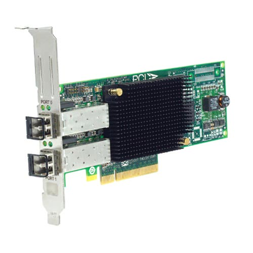
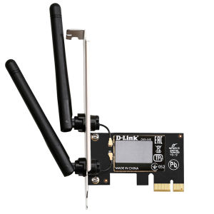

کارت شبکه چیست؟
Network card
به طور کلی ما کارت شبکه کامپیوتر را با عناوین Network Adapter و NIC و Network Card میشناسیم. کارت شبکه کارتی که برای اتصال به اینترنت بکار می رود. بنابراین ممکن است از آن به عنوان کارت اینترنت کامپیوتر هم یاد کنند.
اکثر کامپیوترها کارت شبکه را به صورت built-in دارند (به این معنا که آنها بخشی از مادر بورد اصلی هستند) اما میتوان کارت شبکه را برای افزایش و بهبود عملکرد کامپیوتر به آن افزود.
کارت شبکه واسطی است بین کامپیوتر و شبکه. کارت شبکه برای همه شبکه ها از جمله شبکه اترنت و کابلی، شبکه بی سیم، شبکه wi-fi، و در سیستمهای کامپیوتر رومیزی و لپ تاپ و سرور بخشی حیاتی و ضروری است.
وظیفه کارت شبکه چیست؟

برقراری ارتباط لازم بين کامپيوتر و محيط انتقال
کارت شبکه امکان اتصال دستگاهی با دستگاهی دیگر را فراهم می کند و یا دستگاه را به شبکه مرکزی متصل می نماید.
توجه داشته باشید که کارت شبکه برای برقراری ارتباط بین دستگاه های مختلف به تنهایی کافی نیست و مثلا اگر قرار باشد کامپیوتر شما عضو یک شبکه بزرگ باشد و شما قصد اتصال به اینترنت را داشته باشید، در اینجا به روتر هم نیاز داریم تا دستگاه بتواند از طریق کارت شبکه به روتر متصل شده و در آخر ارتباط اینترنتی برقرار شود
انواع کارت شبکه
انواع کارت شبکه بر اساس ویژگیهای کارت شبکه دارای دستهبندیهای متفاوت است:
از نظر نوع اتصال به شبکه: دو نوع اصلی کارت شبکه به صورت کارت شبکه کابلی یا Wired و کارت شبکه بی سیم یا Wireless است. کارت شبکه کابلی با کابلی از نوع اترنت – Ethernet یا فیبر نوری – Fibber Channel به شبکه وصل میشوند. کارت شبکه وایرلس با امواج رادیویی به اکسس پوینت وصل میشود.
از نظر کاربری: انواع کارت شبکه به دو دسته کارت شبکه کامپیوتری و کارت شبکه سروری تقسیم میشود.
از نظر اسلات هم به ISA و PCI و PCI-X و PCIe و USB تقسیم میشود.
از مناظر مختلف ما میتونیم کارت شبکه ها رو دسته بندی کنیم اما سه تا اساسی ترین هاش همین ها بودند.
کارت شبکه سرور چیست؟

مادربورد سرورهای امروزی دارای چند کارت شبکه تعبیه شده هستند که کارهایی مثل جداسازی ترافیک و load balancing را انجام میدهند. بدین ترتیب قابلیت اطمینان و امنیت بیشتری را در شبکه سروری به همراه دارند. کارت شبکه جزو جداییناپذیر سرور است و سرور بدون آن نمیتواند کار کند. کار سرور شبکه انجام کوئری، پردازش و آنالیز ساختارهای پردازشی از اینترنت است و نتایج را از طریق کارت شبکه به کلاینت مقصد (مثلا کامپیوتر یا سوئیچ شبکه) میرساند.
کارت شبکه کامپیوتری چیست؟
کارت شبکه کامپیوتری چیست؟
کارت شبکه کامپیوتری امکان اتصال کامپیوتر به شبکه را ممکن میکند. اغلب کامپیوترها طوری طراحی شدهاند که روی مادربوردشان یک کارت شبکه تعبیه شده است. بر خلاف سرور شبکه که بدون کارت شبکه نمیتواند کار کند ،کامپیوتر بدون وجود کارت شبکه به کار خود ادامه میدهد مثلا دو کامپیوتر از طریق بلوتوث یا فلش USB میتوانند به تبادل دیتا بپردازند.